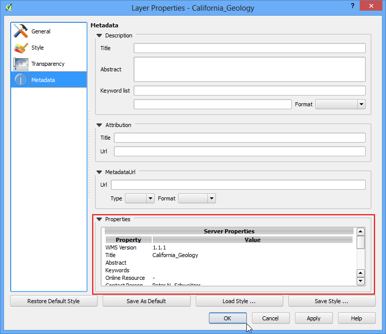

Χρήση WMS Δεδομένων
Συχνά χρειάζεστε αναφορικά επίπεδα δεδομένων για τη βάση του χάρτη σας ή για να εμφανίσετε τα αποτελέσματα σας ως περιεχόμενο άλλων συνόλων δεδομένων. Πολλοί οργανισμοί δημοσιεύουν στο διαδίκτυο σύνολα δεδομένων, τα οποία μπορούν να χρησιμοποιηθούν κατευθείαν στα GIS. Ένα δημοφιλές πρότυπο για τη δημοσίευση χαρτών στο διαδίκτυο είναι το WMS (Web Map Service). Αυτή είναι μια καλύτερη επιλογή για να χρησιμοποιείτε αναφορικά επίπεδα, καθώς αποκτάτε πρόσβαση σε πλούσια σύνολα δεδομένων για το GIS, χωρίς την ταλαιπωρία του να κατεβάσετε και να μορφοποιήσετε τα δεδομένα.
Επισκόπηση εργασίας
Σε αυτό το tutorial, θα φορτώσουμε επίπεδα των Mineral Resources δημοσιευμένα από τη USGS.
Πηγή Δεδομένων: [MRDATA]
Διαδικασία
Ανοίξτε το QGIS και πηγαίνετε στο .

Στην καρτέλα Layers, κάντε κλικ στο New.

Ονομάστε τη σύνδεση σας. Αυτό δεν είναι το όνομα του επιπέδου αλλά το όνομα της υπηρεσίας που προσφέρει το WMS επίπεδο. Μια μόνο υπηρεσία συνήθως προσφέρει πολλαπλά επίπεδα τα οποία μπορούν να προστεθούν στο έργο σας. Το URL που χρειάζεστε για να αποκτήσετε πρόσβαση σε ένα WMS επίπεδο, ονομάζεται GetCapabilities. Όταν συνδέεστε σε ένα WMS διακομιστή με αυτήν την παράμετρο στο URL, επιστρέφει μια λίστα διαθέσιμων επιπέδων μαζί με ποικίλα δεδομένα. Σε αυτή την περίπτωση, ονομάστε τη σύνδεση ως MRDATA USGS και το GetCapabilities URL ως http://mrdata.usgs.gov/services/ca?request=getcapabilities&service=WMS&version=1.1.1&. Πατήστε OK.

Έπειτα, πατήστε το κουμπί Connect για να γίνει η λίστα των επιπέδων διαθέσιμη. Θα παρατηρήσετε διάφορα αναγνωριστικά στη λίστα δίπλα από τα επίπεδα. Το αναγνωριστικό 0 σημαίνει ότι θα πάρετε ένα χάρτη για όλα τα επίπεδα. Αν δε θέλετε όλα τα επίπεδα, μπορείτε να επεκτείνετε τη λίστα κάνοντας κλικ στο εικονίδιο + και επιλέγοντας το επίπεδο που σας ενδιαφέρει. Επιλέξτε το επίπεδο 0 για αυτό το tutorial.

Στην περιοχή Image encoding, πρέπει να επιλέξετε έναν τύπο εικόνας. Οι τύποι εικόνας παίζουν σημαντικό ρόλο και ποιον από αυτούς θα χρησιμοποιήσετε εξαρτάται από την περίπτωση χρήσης σας. Εδώ είναι κάποιοι δείκτες
Ποιότητα: PNG είναι ένας συμπιεσμένος τύπος εικόνας χωρίς απώλειες. JPEG είναι ένας συμπιεσμένος τύπος με απώλειες. TIFF μπορεί να είναι και τα δύο. Αυτό σημαίνει ότι η ποιότητα των PNG εικόνων θα είναι καλύτερη σε σχέση με αυτή των JPEG. Εάν ο κύριος σκοπός σας είναι να εκτυπώσετε ένα χάρτη, χρησιμοποιήστε PNG.
Ταχύτητα: Μιας και οι PNG εικόνες είναι αποσυμπιεσμένες και συνεπώς μεγαλύτερου μεγέθους, χρειάζονται περισσότερο χρόνο για να φορτώσουν. Εάν χρησιμοποιείτε το επίπεδο στο έργο σας ως αναφορικό επίπεδο και χρειάζεται να κάνετε μεγέθυνση/μετακίνηση συχνά, χρησιμοποιήστε JPEG.
Υποστήριξη Πελατών: Το QGIS υποστηρίζει τους περισσότερους τύπους εικόνων, αλλά αν αναπτύσσετε διαδικτυακές εφαρμογές, τα προγράμματα περιήγησης συνήθως δεν υποστηρίζουν TIFF, οπότε θα πρέπει να επιλέξετε έναν άλλον τύπο.
Τύποι δεδομένων: Αν τα επίπεδα σας είναι πρωτίστως διανυσματικά, το PNG θα δώσει καλύτερα αποτελέσματα. Για εικονικά επίπεδα, το JPEG είναι συνήθως καλύτερη επιλογή.
Για αυτό το tutorial, επιλέξτε JPEG ως τύπο. Αλλάξτε το Layer name εάν το επιθυμείτε και πατήστε Add.

Θα δείτε το επίπεδο να έχει φορτώσει στον καμβά του QGIS. Μπορείτε να κάνετε μεγέθυνση/μετακίνηση γύρω όπως με κάθε άλλο επίπεδο. Ο τρόπος με τον οποίο η WMS υπηρεσία λειτουργεί, είναι ότι κάθε φορά που κάνετε μεγέθυνση/μετακίνηση, στέλνει το παράθυρο συντεταγμένων σας στο διακομιστή και ο διακομιστής δημιουργεί μια εικόνα για αυτό το παράθυρο και την επιστρέφει στον πελάτη. Οπότε θα υπάρξει μια καθυστέρηση μέχρι να δείτε την εικόνα της περιοχής που έχετε μεγεθύνει.

Παρ’όλα αυτά, μπορείτε να δείτε κάποια δεδομένα σχετικά με το επίπεδο. Κάντε δεξί κλικ στο επίπεδο και επιλέξτε Properties.

Θα παρατηρήσετε ότι το παράθυρο διαλόγου Properties μοιάζει διαφορετικό και έχει λιγότερες καρτέλες. Μπορείτε να πάτε στην καρτέλα :guilabel:`Metadata`για να μάθετε περισσότερα για την WMS υπηρεσία και τα επίπεδα.
